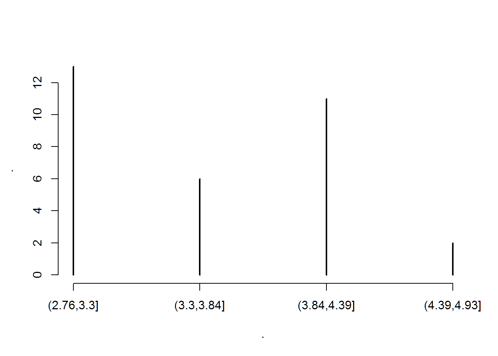
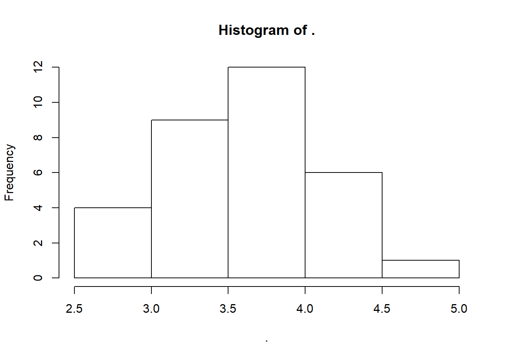
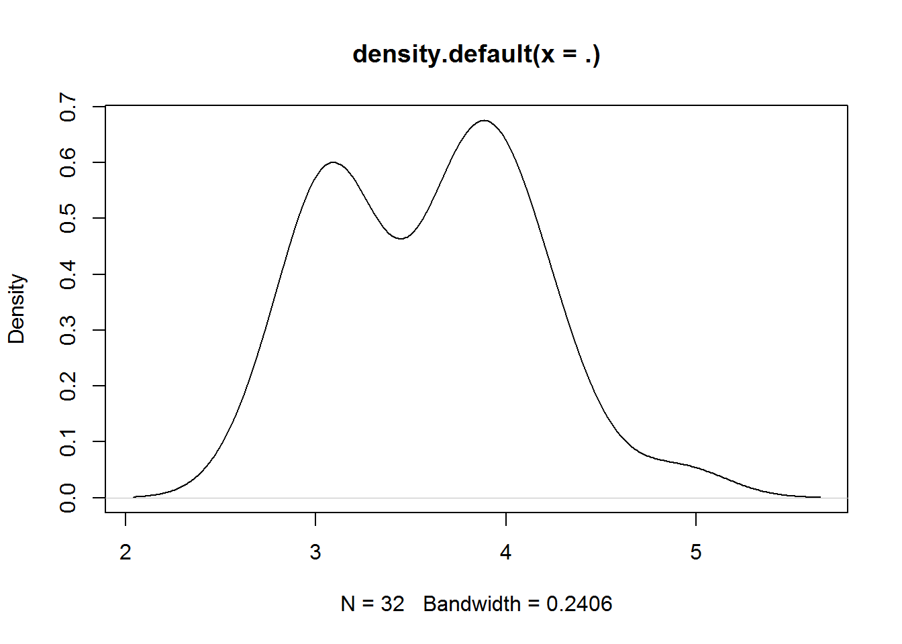
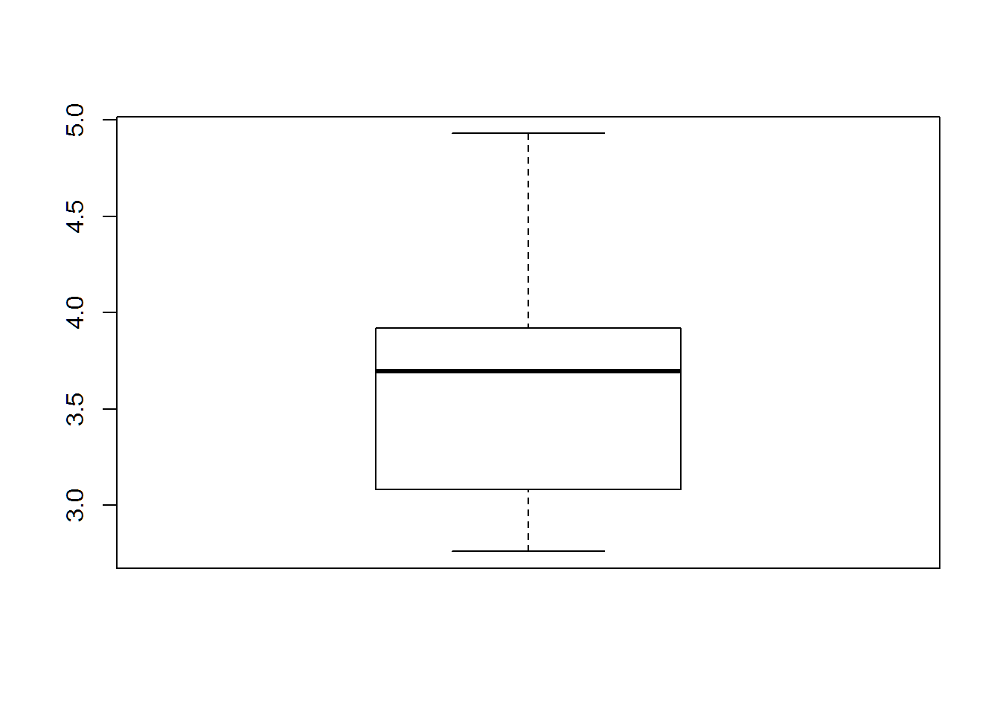
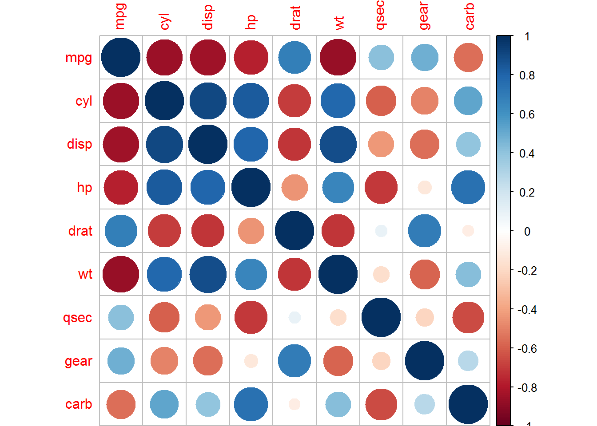
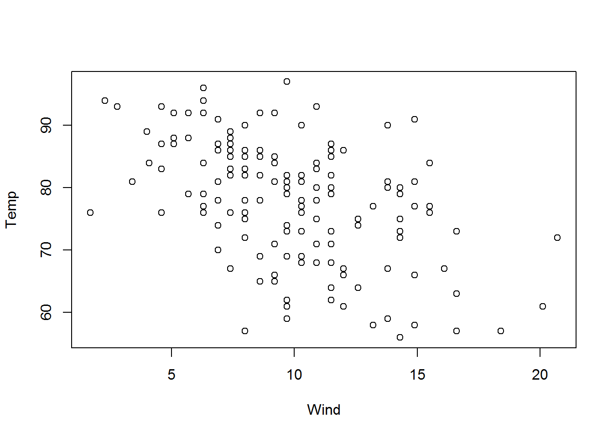

- 1 Introduction
- 2 Basics
- 2.1 Vectors
- 2.1.1 Documentation
- 2.1.2 Classes
- 2.1.3 Making comparisons
- 2.1.4 Inspecting objects
- 2.1.5 Named elements
- 2.1.6 Missing values
- 2.1.7 Slicing to a subvector
- 2.1.8 Extracting from a list
- 2.1.9 Assigning to a subvector
- 2.1.10 Assigning to a list element
- 2.1.11 Initializing
- 2.1.12 Factors
- 2.1.13 Sorting, rank, order
- 2.1.14 Exercises
- 2.2 Matrices and arrays
- 2.3 Syntax
- 2.4 Functions
- 2.5 Loops and control flow
- 2.6 Data frames
- 2.7 Built-in constants
- 2.1 Vectors
- 3 Tables
- 3.1 Essential packages
- 3.2 The data.table class
- 3.3 Aggregation
- 3.4 Modifying data
- 3.5 Joins
- 3.6 Input and output
- 3.6.1 File paths
- 3.6.2
freadto read delimited files - 3.6.3
rbindlistto combine tables - 3.6.4 Date and time columns
- 3.6.5 Character columns
- 3.6.6 Categorical columns
- 3.6.7 List columns
- 3.6.8
fwriteto write delimited files - 3.6.9 Saving and loading R objects
- 3.6.10 Reading and writing other formats
- 3.6.11 Formatting the display of columns
- 3.7 Exploring data
- 3.8 Organizing relational tables
- 4 Getting work done
Chapter 3 Tables
This chapter covers navigating tabular data with R. The core syntax is (3.2.4.3):
DT[where, select|update|do, by] # SQL verbs
DT[i, j, by] # R function argumentsIt reads as:
- Subset using
i, then - Group using
by, then - Do
j
3.1 Essential packages
This section covers packages that help me work more efficiently, to the point where I regard them as essential. They’ll be used throughout the rest of this document. They don’t have any dependencies on other packages, and I expect they’ll be available as long as R is. It will be assumed in subsequent sections that these libraries have been attached:
library(magrittr)
library(data.table)3.1.1 The magrittr package
Magrittr introduces syntax with “pipes,” improving readability by unnesting function calls:
# we can do
x %>% f %>% g %>% h
# instead of
h(g(f(x)))In addition, it allows more compact function definitions (2.4.4):
fun = . %>% .^2 %>% sum %>% sqrt
fun(1:3)# [1] 3.741657Despite these advantages, magrittr can slow down code, so avoid using it anywhere where speed might be an issue.
To install, just use CRAN:
install.packages('magrittr')The name is a pun on René Magritte’s pipe painting. To get a handle on the package, I would start with the package vignette.
3.1.2 The data.table package
Data.table offers a variant of the data.frame class for data frames (seen in 2.6), optimized for fast sorted and grouped operations and enhanced with cleaner syntax. Section 3.2 introduces this data.table class.
The package also bundles in a variety of other functionality:
- ITime and IDate date and time classes
freadandfwritefor fast reading and writing of delimited filesdcastandmeltfor reshaping tables
Because these disparate features are bundled together in data.table, we don’t have to load more packages and worry about their complicated dependencies or namespace conflicts (2.4.1.3).
3.1.2.1 Installation
Again, CRAN can be used:
install.packages('data.table')However, the package is under active development, with new features available only in the development version. To install it, follow the instructions from the package wiki:
remove.packages("data.table")
install.packages("data.table", type = "source",
repos = "http://Rdatatable.github.io/data.table")If using Windows, you’ll need to first install Rtools (requiring administrator privileges), as explained in the last link.
3.1.2.2 Getting started
The official vignettes for the package are a great way to start with the package. See them on the wiki or with
browseVignettes(package="data.table")(Beware that as of March 2017, the website vignettes are somewhat out-of-date.) The website also includes links to other useful materials (an online course, presentation materials, blog posts). Before using the package, I started by reading some slides and the FAQ in full.
3.2 The data.table class
Data.tables extend the data frame class introduced in 2.6.
This section reviews basic operations seen in the last chapter (inspecting, slicing, extracting), before discussing how data.table extends data.frame.
3.2.1 Inspecting
Consider the quakes data set (with more info in ?quakes):
quakeDT = data.table(quakes)# lat long depth mag stations
# 1: -20.42 181.62 562 4.8 41
# 2: -20.62 181.03 650 4.2 15
# 3: -26.00 184.10 42 5.4 43
# 4: -17.97 181.66 626 4.1 19
# 5: -20.42 181.96 649 4.0 11
# ---
# 996: -25.93 179.54 470 4.4 22
# 997: -12.28 167.06 248 4.7 35
# 998: -20.13 184.20 244 4.5 34
# 999: -17.40 187.80 40 4.5 14
# 1000: -21.59 170.56 165 6.0 119By default, data.tables with over 100 rows will print in the compressed form seen above, showing just the first and last five rows. To globally change how many rows are needed, use options(datatable.print.nrows = n). To override it a single time, use print with nrows=. I usually set nrows=Inf to print all rows:
quakeDT %>% print(nrow = Inf)To browse a table in a new window, View for data frames (2.6.2) again works:
quakeDT %>% View
# or if using RStudio
quakeDT %>% utils::View()To inspect the structure of a data.table, we can again use str (2.1.4):
quakeDT %>% str# Classes 'data.table' and 'data.frame': 1000 obs. of 5 variables:
# $ lat : num -20.4 -20.6 -26 -18 -20.4 ...
# $ long : num 182 181 184 182 182 ...
# $ depth : int 562 650 42 626 649 195 82 194 211 622 ...
# $ mag : num 4.8 4.2 5.4 4.1 4 4 4.8 4.4 4.7 4.3 ...
# $ stations: int 41 15 43 19 11 12 43 15 35 19 ...
# - attr(*, ".internal.selfref")=<externalptr>Here, we see the class of each column along with the first few values. In addition, there is an obscure ".internal.selfref" attribute, which we can ignore except when saving or loading the table from disk (3.6.9). Other attributes will sometimes also show up here, related to optimizing the performance of ordered or grouped queries on the table (3.5.8.1).
In the code above, we could use syntax like View(quakeDT) instead of quakeDT %>% View, but I often find the latter handier, since it’s easy to insert intermediate steps, like quakeDT %>% head(10) %>% View. Also, while %>% is slow, it’s not going to matter for tasks like browsing data.
3.2.2 Slicing
A slice of a data.table is a smaller data.table formed by subsetting rows, columns, or both, analogous to vector and matrix slices seen in 2.1.7 and 2.2.3. The remaining columns will retain attributes from the full table (class, levels for factors, etc.).
The syntax is familiar from vectors and matrices:
# example data
DT = data.table(
x = letters[c(1, 2, 3, 4, 5)],
y = c(1, 2, 3, 4, 5),
z = c(1, 2, 3, 4, 5) > 3
)DT[1:2, ]# x y z
# 1: a 1 FALSE
# 2: b 2 FALSEDT[, "z"]# z
# 1: FALSE
# 2: FALSE
# 3: FALSE
# 4: TRUE
# 5: TRUEDT[-3, c("y", "z")]# y z
# 1: 1 FALSE
# 2: 2 FALSE
# 3: 4 TRUE
# 4: 5 TRUEOne difference with matrices is that when only slicing rows, we can skip the comma:
DT[1:2]# x y z
# 1: a 1 FALSE
# 2: b 2 FALSEOther differences come into play when subsetting columns programmatically, where we need either a .. prefix…
keep_cols = c("y", "z")
DT[, keep_cols] # error# Error in `[.data.table`(DT, , keep_cols): j (the 2nd argument inside [...]) is a single symbol but column name 'keep_cols' is not found. Perhaps you intended DT[,..keep_cols] or DT[,keep_cols,with=FALSE]. This difference to data.frame is deliberate and explained in FAQ 1.1.DT[, ..keep_cols] # use this instead# y z
# 1: 1 FALSE
# 2: 2 FALSE
# 3: 3 FALSE
# 4: 4 TRUE
# 5: 5 TRUE… or we need with=FALSE if programming inline:
DT[, letters[25:26]] # no error, but doesn't print what we want# [1] "y" "z"DT[, letters[25:26], with=FALSE] # use this instead# y z
# 1: 1 FALSE
# 2: 2 FALSE
# 3: 3 FALSE
# 4: 4 TRUE
# 5: 5 TRUEThese requirements are a quirk of the more flexible DT[...] syntax that supports far more than taking slices, as discussed in 3.2.4.3.
DT[, 2:3] or cols = 2:3; DT[, ..cols] works but is discouraged. Column numbers can easily change in the course of writing or updating a script, invalidating column number references in a way that will be annoying to debug. See the first answer in vignette("datatable-faq") for a deeper discussion.
DT[, "z"] will extract the z column instead of taking a slice thanks to data frames’ drop=TRUE default (which also came up regarding matrices in the last chapter). Second, DT[1:2] will slice the first two columns instead of the first two rows, thanks to the fact that data frames (and data.tables) are lists and the no-comma usage of [ triggers list slicing.
head, tail and the special empty and missing-data slices (all seen in the last chapter) work by row:
head(DT, -3) # top, removing last 3# x y z
# 1: a 1 FALSE
# 2: b 2 FALSEtail(DT, 2) # bottom 2# x y z
# 1: d 4 TRUE
# 2: e 5 TRUEDT[0L] # empty # Empty data.table (0 rows) of 3 cols: x,y,zDT[NA_integer_] # missing# x y z
# 1: NA NA NAThe package also offers first and last, which are simply special cases of head and tail.
Fancier slicing methods, like DT[x > "b", .(y, z)], will be introduced with the rest of the DT[...] syntax in 3.2.4.3.
There are some syntactical shortcuts for slicing to a set of columns in j; see 3.8.4.3.
3.2.3 Extracting columns
Since data.tables (and data frames) are lists, we can extract columns like DT$z or DT[["z"]].
With the full DT[...] syntax (3.2.4.3), it is easy to extract a column for a limited set of rows, like DT[x > "b", z].
3.2.4 Extensions to the data.frame class
The first thing to note is that data.tables are data frames, so any function that works on a data frame will work fine with data.tables, too (even if the data.table package is not installed or attached).
3.2.4.1 Modification in-place
In contrast with the rest of R, data.tables are primarily modified “in-place” (or “by reference”), which can be much more efficient. As a first example, we can switch the class of a data frame to data.table:
# example data
DF = data.frame(
x = letters[c(1, 2, 3, 4, 5)],
y = c(1, 2, 3, 4, 5),
z = c(1, 2, 3, 4, 5) > 3
)str(DF)# 'data.frame': 5 obs. of 3 variables:
# $ x: Factor w/ 5 levels "a","b","c","d",..: 1 2 3 4 5
# $ y: num 1 2 3 4 5
# $ z: logi FALSE FALSE FALSE TRUE TRUEsetDT(DF)
str(DF)# Classes 'data.table' and 'data.frame': 5 obs. of 3 variables:
# $ x: Factor w/ 5 levels "a","b","c","d",..: 1 2 3 4 5
# $ y: num 1 2 3 4 5
# $ z: logi FALSE FALSE FALSE TRUE TRUE
# - attr(*, ".internal.selfref")=<externalptr>We did not use = or <- to assign the result of setDT; the function simply altered DF in-place. All of data.table’s functions named like set* do this.
3.2.4.2 Factor vs character columns
Another difference is that data.frame(...) reads string input as a factor categorical variable (2.1.12), as seen in the str output above; while data.table(...) reads it as character:
DT = data.table(
x = letters[c(1, 2, 3, 4, 5)],
y = c(1, 2, 3, 4, 5),
z = c(1, 2, 3, 4, 5) > 3
)
str(DT)# Classes 'data.table' and 'data.frame': 5 obs. of 3 variables:
# $ x: chr "a" "b" "c" "d" ...
# $ y: num 1 2 3 4 5
# $ z: logi FALSE FALSE FALSE TRUE TRUE
# - attr(*, ".internal.selfref")=<externalptr>Data frames’ preference for factors may still bite when reading files in with read.table from base R instead of fread from data.table (3.6.2).
3.2.4.3 Extended syntax for DT[...]
The third major difference is the extension of the DT[...] syntax to support more than simple slices (like DF[i,j], where i and j as indices, covered in 3.2.2). It offers SQL-style syntax that is cleaner, particularly for by-group operations:
# (pseudocode)
DT[where, select|update|do, by] # SQL verbs
DT[i, j, by] # R function argumentsThis should be read as a command to take a sequence of steps:
- Subset using
i - Group using
by - Do
j
We can use column names as barewords, and even form expressions in terms of columns:
DT[x > "b", sum(y), by=z]# z V1
# 1: FALSE 3
# 2: TRUE 9Typically, the i and j arguments are called by position, as seen here; while by= is called by name.
Whenever j evaluates to a list, the output will be a new data.table:
DT[x > "b", .(n_bigy = sum(y > 2), n_smally = sum(y <= 2)), by=z]# z n_bigy n_smally
# 1: FALSE 1 0
# 2: TRUE 2 0.() convenience function. Inside many arguments of DT[...], we can use the shorthand .(), which stands for list().
The use of by= is very similar to a for loop (2.5.1) over subsets, but it is better in a few important ways:
- We don’t have to manually construct and keep track of some “split-up data” list to iterate over.
- Fast by-group functions are used when available (see
?GForce) - We don’t have to define the task in
jas a function of prespecified variables – we can just use any columns of the data.table. - We don’t have to worry about intermediate variables (like
casein the next example) contaminating the global environment.
There are some syntactical shortcuts for writing a list of columns in by=; see 3.8.4.3.
3.2.4.4 An example
The task in j can really be anything. Just as a demonstration of its power, here’s how it can be used for saving per-group plots to a PDF:
# note: this code will save to your current working directory
# type getwd() and read ?setwd for details
bwDT = data.table(MASS::birthwt)
pdf(file="birthweight_graphs.pdf")
bwDT[, {
case = sprintf("high #visits? = % 5s, smoking? = % 5s", .BY$high_vis, .BY$smoke)
cat("Handling case:", case, "...\n")
plot(
age ~ lwt,
main = case
)
}, by=.(high_vis = ftv >= 1, smoke = as.logical(smoke))]# Handling case: high #visits? = FALSE, smoking? = FALSE ...# Handling case: high #visits? = TRUE, smoking? = FALSE ...# Handling case: high #visits? = TRUE, smoking? = TRUE ...# Handling case: high #visits? = FALSE, smoking? = TRUE ...# Empty data.table (0 rows) of 2 cols: high_vis,smokedev.off()# png
# 2Plotting graphs is beyond the scope of this document, but the example above should make intuitive sense after reading the docs for each object, ?MASS::birthwt, ?pdf, et al. For each group, we’re formatting a string with sprintf; printing it with cat; and saving a plot. The special symbol .BY is a list containing the per-group values of the by= variables. Formatting and printing strings will be covered more in 4.8.
DT[z] and DT[!z] will give errors, for design reasons related to the syntax for joins (3.5). To get around this, always wrap the column in parentheses: DT[(z)] and DT[!(z)].
by= argument. To group on a floating-point variable, however, is just asking for trouble, for the usual numerical computing reasons. Instead, always use characters, integers or factors. To discretize a continuous variable into bins, use cut.
options(datatable.verbose = TRUE). This option is similar to verbose output from an optimization call (reporting the value of the objective at each iteration, etc.). To only see verbose output for a single call, add verbose = TRUE. For example,DT[x > "b", sum(y), by=z, verbose=TRUE].
3.3 Aggregation
The mtcars data set (see ?mtcars) has two categorical variables:
amfor automatic (0) or manual (1) transmission; andvsfor v (0) or straight (1) engine shape.
# example data
carsDT = data.table(mtcars, keep.rownames = TRUE)
# quick inspection
first(carsDT)# rn mpg cyl disp hp drat wt qsec vs am gear carb
# 1: Mazda RX4 21 6 160 110 3.9 2.62 16.46 0 1 4 4Suppose we want to compare the mean horsepower, hp, across these categories:
carsDT[, .(mean_hp = mean(hp)), by=.(am, vs)]# am vs mean_hp
# 1: 1 0 180.83333
# 2: 1 1 80.57143
# 3: 0 1 102.14286
# 4: 0 0 194.16667So, we just write j of DT[i,j,by] as an expression to compute the summary statistic, optionally giving it a name by wrapping in .(name = expression).
Sections 3.7.4 and 3.7.5 cover more options for exploring data with summary statistics; and 3.7.6 shows how to put this result in wide format (with, e.g., am on rows and vs on columns).
3.3.1 Iterating over columns
Now suppose we want to compare mean horsepower, weight and displacement:
## carsDT[, .(mean_hp = mean(hp), mean_wt = mean(wt), mean_disp = mean(disp)), by=.(am, vs)]
## # can be simplified to...
carsDT[, lapply(.SD, mean), by=.(am, vs), .SDcols = c("hp", "wt", "disp")]# am vs hp wt disp
# 1: 1 0 180.83333 2.857500 206.2167
# 2: 1 1 80.57143 2.028286 89.8000
# 3: 0 1 102.14286 3.194286 175.1143
# 4: 0 0 194.16667 4.104083 357.6167So, we just write the relevant columns in .SDcols and refer to .SD, the Subset of Data. Within each by= group, the query has access to .SD with rows for that group and columns as specified in .SDcols. .SD, like .BY seen earlier, is a special symbol available in some arguments of DT[...], documented at ?.SD.
We can use lapply (a function designed for iterating over lists) here since .SD is a data.table, which is a list of column vectors (see 2.6.1). The column names carry over to the result because lapply always carries over names.
While dot notation .SDcols=.(hp, wt, disp) is not yet supported, there are a variety of convenience features for specifying .SDcols, covered in 3.8.4.3.
by=1:nrow(DT) and possibly using unlist(.SD) somewhere. Not only will this be incredibly slow, but it also suggests that the data is poorly organized, costing a lot of extra mental energy at every step. Section 3.8 explains some ways to format data better to avoid the need for this problematic approach.
3.4 Modifying data
Creating, editing and removing columns are all done using := in j of DT[i, j, by]. This functionality operates in-place, in the sense that the underlying data stays in the same place, which is more efficient in terms of how much RAM and time is taken. See vignette("datatable-reference-semantics") for details.
3.4.1 Creating columns
# example data
DT = data.table(
x = letters[c(1, 2, 3, 4, 5)],
y = c(1, 2, 3, 4, 5),
z = c(1, 2, 3, 4, 5) > 3
)# x y z
# 1: a 1 FALSE
# 2: b 2 FALSE
# 3: c 3 FALSE
# 4: d 4 TRUE
# 5: e 5 TRUE# creating a column
DT[, u := 5:1][]# x y z u
# 1: a 1 FALSE 5
# 2: b 2 FALSE 4
# 3: c 3 FALSE 3
# 4: d 4 TRUE 2
# 5: e 5 TRUE 1# creating multiple
DT[, `:=`(v = 2, w = 3L)][]# x y z u v w
# 1: a 1 FALSE 5 2 3
# 2: b 2 FALSE 4 2 3
# 3: c 3 FALSE 3 2 3
# 4: d 4 TRUE 2 2 3
# 5: e 5 TRUE 1 2 3# creating with dynamic names
nms = c("a", "b", "c")
DT[, (nms) := .(1, 2, 3)][]# x y z u v w a b c
# 1: a 1 FALSE 5 2 3 1 2 3
# 2: b 2 FALSE 4 2 3 1 2 3
# 3: c 3 FALSE 3 2 3 1 2 3
# 4: d 4 TRUE 2 2 3 1 2 3
# 5: e 5 TRUE 1 2 3 1 2 3All of these tasks are performed in-place – altering DT without making a new object. Usually, the results are not printed in the console; but they appear here because [] is “chained” onto the end of each task.
:= is the function for creation, modification and deletion of columns. This will be covered it more detail in subsequent sections, but is worth emphasising. In particular, this contrasts with Stata (which uses distinct verbs gen, replace and drop).
`:=`(...) syntax does not support iterative definitions like DT[, `:=`(W1 = u + y, W2 = W1^2)]. One common workaround is DT[, `:=`(W1 = W1 <- u + y, W2 = W1^2)]. This solution may not be intuitive for new R users, but the gist is: W1 <- u + y creates W1 as an object in DT[...] and then returns its value, let’s call it v. Now, W2 = W1^2 can find W1, since it was created by <-; and W1 = W1 <- u + y simplifies to W1 <- v, where v is the return value of W1 <- u + y.
3.4.2 Removing columns
nms = c("u", "v", "w", "a", "b", "c")
DT[, (nms) := NULL][]# x y z
# 1: a 1 FALSE
# 2: b 2 FALSE
# 3: c 3 FALSE
# 4: d 4 TRUE
# 5: e 5 TRUEA warning will print if we remove some columns that don’t currently exist.
3.4.3 Replacing entire columns
Data.table is careful about column types:
DT[, a := 10L ][] # Create a new column of integers# x y z a
# 1: a 1 FALSE 10
# 2: b 2 FALSE 10
# 3: c 3 FALSE 10
# 4: d 4 TRUE 10
# 5: e 5 TRUE 10DT[, a := 21L ][] # Replace it with another column of integers# x y z a
# 1: a 1 FALSE 21
# 2: b 2 FALSE 21
# 3: c 3 FALSE 21
# 4: d 4 TRUE 21
# 5: e 5 TRUE 21DT[, a := 32.5 ][] # Replace it with a float# Warning in `[.data.table`(DT, , `:=`(a, 32.5)): Coerced 'double' RHS to 'integer' to
# match the column's type; may have truncated precision. Either change the target column
# to 'double' first (by creating a new 'double' vector length 5 (nrows of entire table)
# and assign that; i.e. 'replace' column), or coerce RHS to 'integer' (e.g. 1L, NA_[real|
# integer]_, as.*, etc) to make your intent clear and for speed. Or, set the column type
# correctly up front when you create the table and stick to it, please.# x y z a
# 1: a 1 FALSE 32
# 2: b 2 FALSE 32
# 3: c 3 FALSE 32
# 4: d 4 TRUE 32
# 5: e 5 TRUE 32The warning in the last call is related to coercion of vector classes (2.1.2).
Safeguards against accidental coercion. The verbose warning printed above is typical for the package and an excellent feature. Running the final command, data.table knows that the a column is of integer type and sees that 32.5 is conspiciously not an integer. So it gives a warning when coercing 32.5 to an integer (to match a).
a would be coerced to match the float 32.5 – probably not the behavior we want – with no warning. That is, if we have x <- c(21L, 22L), we can freely assign x[1] <- 32.5; and the same freedom (by which I mean “danger”) is present even if x is a data frame column. For more on the issue, search online for “type safety.”
If we want this assignment to work, we need to change a’s type by passing a full vector, as described in the warning:
DT[, a := rep(32.5, .N) ][]# x y z a
# 1: a 1 FALSE 32.5
# 2: b 2 FALSE 32.5
# 3: c 3 FALSE 32.5
# 4: d 4 TRUE 32.5
# 5: e 5 TRUE 32.5The coercion is done silently, but it can be made more visible by turning on verbose, which notes the “plonk” of a full vector replacement. .N is a special symbol for the number of rows (or the number of rows in a subset when i or by= is present).
3.4.4 Replacing columns conditionally
Conditional replacement here is analogous to a SQL UPDATE query or a replace if command in Stata. To illustrate, we will look again at a vectorized if/else assignment, mentioned in 2.5.2:
DT[ , b := "Aardvark"] # initialize to baseline valueDT[y > 1, b := "Zebra"][] # replace based on a condition# x y z a b
# 1: a 1 FALSE 32.5 Aardvark
# 2: b 2 FALSE 32.5 Zebra
# 3: c 3 FALSE 32.5 Zebra
# 4: d 4 TRUE 32.5 Zebra
# 5: e 5 TRUE 32.5 ZebraThis can also be done with chaining:
DT[, b := "Aardvark"][y > 1, b := "Zebra"]This chaining works because DT[...][...] is evaluated like (DT[...])[...] and the return value of the piece in parentheses is DT – provided j has a := statement.
j is not a := statement, the return value is not the original data.table but rather a new one. Subsequent steps in the chain will not affect the starting table. So, after DT[y < Inf, d := 1] and DT[y < Inf][, d := 2], what does the d column look like in DT? See the Exercise section of vignette("datatable-reference-semantics"); and the Note section of ?`:=`.
As we saw in the last section, partial replacement of a column will trigger a warning if the classes don’t match:
DT[, b := "Aardvark"][y > 1, b := 111]# Warning in `[.data.table`(DT[, `:=`(b, "Aardvark")], y > 1, `:=`(b, 111)): Coerced
# 'double' RHS to 'character' to match the column's type; may have truncated precision.
# Either change the target column to 'double' first (by creating a new 'double' vector
# length 5 (nrows of entire table) and assign that; i.e. 'replace' column), or coerce RHS
# to 'character' (e.g. 1L, NA_[real|integer]_, as.*, etc) to make your intent clear and for
# speed. Or, set the column type correctly up front when you create the table and stick to
# it, please.Another nice feature, similar to Stata, is reporting of the number of rows modified. This can be seen by turning verbose on:
DT[, b := "Aardvark"][y > 1, b := "Zebra", verbose = TRUE]# Detected that j uses these columns: b
# Assigning to 4 row subset of 5 rowsThe number reported is the number of rows assigned to (irrespective of whether their values were changed by the assignment), in contrast with Stata, which reports the number of changes.
3.4.5 Other in-place modifications
The data.table package has a few other tools for modifying table attributes in-place:
The
setfunction is another way of making assignments like:=.setDTandsetDF, seen earlier, alter the class.setorderwill sort the table by some or all of its columns.setcolorderchanges the order in which columns are displayed.Indices and the key (explained in 3.5.8.1) can be set with
setindexandsetkey, respectively.setnameswill alter column names. For example, in 3.3.1 we saw…carsDT[, lapply(.SD, mean), by=.(am, vs), .SDcols = c("hp", "wt", "disp")]# am vs hp wt disp # 1: 1 0 180.83333 2.857500 206.2167 # 2: 1 1 80.57143 2.028286 89.8000 # 3: 0 1 102.14286 3.194286 175.1143 # 4: 0 0 194.16667 4.104083 357.6167… and if we want to add the prefix
"mean_"to the results, we can docols = c("hp", "wt", "disp") carsDT[, lapply(.SD, mean), by=.(am, vs), .SDcols = cols] %>% setnames(cols, sprintf("mean_%s", cols)) %>% print# am vs mean_hp mean_wt mean_disp # 1: 1 0 180.83333 2.857500 206.2167 # 2: 1 1 80.57143 2.028286 89.8000 # 3: 0 1 102.14286 3.194286 175.1143 # 4: 0 0 194.16667 4.104083 357.6167The trailing
%>% printcommand is used because,setnames, like:=and the otherset*operators, does not print the table on its own. The string-formattersprintfwill be explained in 4.8.setattris a general function for altering attributes of a vector or other object (see?attributes). For example, if we have a factor column (encoding categorical data), we can change its “levels”:# example data fDT = data.table(fac = factor(c("A", "B"), levels = c("A", "B", "C")))levels(fDT$fac)# [1] "A" "B" "C"fDT$fac %>% setattr("levels", c("A", "B", "Q")) levels(fDT$fac)# [1] "A" "B" "Q"
3.4.6 Avoiding in-place modification
To create a new data.table starting from an existing table, use
DT2 = copy(DT1)We have to use this instead of DT2 = DT1 since with the latter we have only created a new “pointer” to the first table. I routinely make copies like this after reading in data (3.6.2) so that I can back out where I tripped over something in the process of data cleaning.
Besides DT2 = DT1, names1 = names(DT1) is also unsafe, since the names function does not extract the column names as they are at a given time, but rather points at the names attribute, which can change as columns are modified or rearranged.
3.4.7 Using in-place modification in functions
A user-written function (2.4.4) like
f <- function(DT) DT[, newcol := 1111 ][]will act like := and the set* functions, altering its input in-place. This can be useful, but requires extra caution. See the “:= for its side effect” section of vignette("datatable-reference-semantics") for discussion.
The [] inside the function is necessary for printing, due to restrictions of R syntax and how data.table gets around them.
3.5 Joins
They are called “joins” or “merges.”
3.5.1 Equi joins
# example data
a = data.table(id = c(1L, 1L, 2L, 3L, NA_integer_), t = c(1L, 2L, 1L, 2L, NA_integer_), x = 11:15)# id t x
# 1: 1 1 11
# 2: 1 2 12
# 3: 2 1 13
# 4: 3 2 14
# 5: NA NA 15b = data.table(id = 1:2, y = c(11L, 15L))# id y
# 1: 1 11
# 2: 2 15The idiom for a simple equi join is x[i, on=.(...)] or x[i] for short:
a[b, on=.(id)]# id t x y
# 1: 1 1 11 11
# 2: 1 2 12 11
# 3: 2 1 13 15It is called an equi join since we are only getting matches where equality holds between the on= columns in the two tables.
Think of x[i] as using index table i to look up rows of x, in the same way an “index matrix” can look up elements of a matrix (2.2.4). By default, we see results for every row of i, even those that are unmatched.
Here are some more complicated examples:
a[b, on=.(x = y)]# id t x i.id
# 1: 1 1 11 1
# 2: NA NA 15 2a[b, on=.(id, x = y)]# id t x
# 1: 1 1 11
# 2: 2 NA 15When merging on columns with different names, they must be written in on= like x = y where x is from the “left” table, and y from the “right” one. Because we are using i to lookup rows in x, the displayed column will have its name from x and its values from i.
A character vector also works in, e.g., on=c("id", x = "y"), making it easier to merge programmatically.
3.5.2 Subset lookup
For browsing dynamic data (that grows over time), it is convenient and quick to use joins:
a[.(1L), on=.(id)]# id t x
# 1: 1 1 11
# 2: 1 2 12# or, as a function
ra <- function(my_id) a[.(my_id), on=.(id)]
ra(2L)# id t x
# 1: 2 1 13Note that the index i is a list here, not a data.table. The link between the two is close, since data.tables are just lists of columns (3.3.1). Any list passed in i will be treated the same as the analogous data.table with appropriate column names.
Subset browsing becomes even easier when keys are set so that on= can be skipped (3.5.8.1).
3.5.3 Aggregating in a join
Looking again at the first join above, suppose we want to use b to find rows in a and then add up a$x. We’ll do this by using by=.EACHI:
a[b, on=.(id)]# id t x y
# 1: 1 1 11 11
# 2: 1 2 12 11
# 3: 2 1 13 15a[b, on=.(id), sum(x), by=.EACHI]# id V1
# 1: 1 23
# 2: 2 13It is called “each i” since the syntax is x[i, ...] and we are computing per row of the index i. I prefer to write the on= before the j (unlike the core syntax of DT[i,j,by]) since the on= merging columns are closely related to the i index.
If we tried summing b$y here, we would not get 11+11 for id 1:
a[b, on=.(id)] # y shows up twice# id t x y
# 1: 1 1 11 11
# 2: 1 2 12 11
# 3: 2 1 13 15a[b, on=.(id), .(sum(x), sum(y)), by=.EACHI] # we only get one y# id V1 V2
# 1: 1 23 11
# 2: 2 13 15This is because we are working by each row of b. For id 1 in b, y is a single value, 11. So really there is no point in summing y or otherwise aggregating columns from i when using by=.EACHI.
DT[i,on=,j,by=bycols]. Just to repeat: only by=.EACHI works in a join. Typing other by= values there will cause i’s columns to become unavailable. This may eventually change.
3.5.4 Updating in a join
Continuing from the last example, we are computing sum(x) per row of b, so maybe we want to save the result as a column in b:
b[, sumx :=
a[b, on=.(id), sum(x), by=.EACHI]$V1
]
# or
b[, sumx :=
a[.SD, on=.(id), sum(x), by=.EACHI]$V1
]# id y sumx
# 1: 1 11 23
# 2: 2 15 13j computations. When the task in j evaluates to an unnamed list, default names V1, V2, ... are assigned. We can use these to extract a single computed column with $V1, $V2, etc. Since we can only extract one column at a time, we usually only create and extract a single column, auto-named V1.
On the other hand, we may want to take values from b and assign them to the larger table a:
a[b, on=.(id), y := i.y ]# id t x y
# 1: 1 1 11 11
# 2: 1 2 12 11
# 3: 2 1 13 15
# 4: 3 2 14 NA
# 5: NA NA 15 NAThis sort of operation is very common when doing analysis with well-organized relational data, and will come up again in 3.8. It is essentially the same as a SQL UPDATE JOIN. It might also be called a “merge assign” (though I seem to be the only one using that term).
The i.* prefix in i.y indicates that we are taking the column from the i table in x[i]. We can similarly use an x.* prefix for columns from x. This helps to disambiguate if the same column names appear in both tables, and is particularly helpful with non-equi joins (3.5.7). I recommend always using i.* prefixes when copying columns in an update join.
b[a, on=.(id), x := i.x, verbose = TRUE ][]. With verbose on, we see a helpful message about assignment “to 3 row subset of 2 rows.”
3.5.5 Self join to fill in missing levels
Consider the a data set from above:
# example data
a = data.table(id = c(1L, 1L, 2L, 3L, NA_integer_), t = c(1L, 2L, 1L, 2L, NA_integer_), x = 11:15)# id t x
# 1: 1 1 11
# 2: 1 2 12
# 3: 2 1 13
# 4: 3 2 14
# 5: NA NA 15Now we want to “complete” the data set so that every id has a row for every time t:
a[CJ(id = id, t = t, unique=TRUE), on=.(id, t)]# id t x
# 1: NA NA 15
# 2: NA 1 NA
# 3: NA 2 NA
# 4: 1 NA NA
# 5: 1 1 11
# 6: 1 2 12
# 7: 2 NA NA
# 8: 2 1 13
# 9: 2 2 NA
# 10: 3 NA NA
# 11: 3 1 NA
# 12: 3 2 14This is called a self join because we are using the table’s own columns in i of x[i, on=]. The CJ function is a helper that takes all combinations of vectors, alternately called the Cartesian product or a “cross join.” See 4.2 for details. By applying unique=TRUE, we treat each vector as a set in the mathematical sense, only considering distinct values.
Notice that missing values (NA) in i are treated in the same way as other values.
3.5.6 Handling matches
For this section, we’ll reset the tables:
# example data
a = data.table(id = c(1L, 1L, 2L, 3L, NA_integer_), t = c(1L, 2L, 1L, 2L, NA_integer_), x = 11:15)# id t x
# 1: 1 1 11
# 2: 1 2 12
# 3: 2 1 13
# 4: 3 2 14
# 5: NA NA 15b = data.table(id = 1:2, y = c(11L, 15L))# id y
# 1: 1 11
# 2: 2 153.5.6.1 Handling multiply-matched rows
In a[b, on=.(id)], we are indexing by rows of b and so get matches for every row of b. By default, we get all matches in a, but this can be tweaked:
a[b, on=.(id), mult="first"]# id t x y
# 1: 1 1 11 11
# 2: 2 1 13 15Now each row of b only returns the first matching row (from the top) in a. Similarly, we could select mult="last".
3.5.6.2 Handling unmatched rows
Flipping it around, if we use a to index b, we have some index rows from a that don’t have any matches in b:
b[a, on=.(id)]# id y t x
# 1: 1 11 1 11
# 2: 1 11 2 12
# 3: 2 15 1 13
# 4: 3 NA 2 14
# 5: NA NA NA 15These unmatched rows still show up in the result, which is usually nice. However, this behavior can also be tweaked:
b[a, on=.(id), nomatch=0]# id y t x
# 1: 1 11 1 11
# 2: 1 11 2 12
# 3: 2 15 1 13Dropping unmatched elements of i is similar to filtering _m == 3 in Stata.
x[i] join is – for each row of i, how many matches did we find in x? To see the answer, use b[a, on=.(id), .N, by=.EACHI].
Comparison with Stata. Because x[i] uses i to look up rows in x, we are never looking ar rows that correspond to Stata’s _m == 1 – that belong to x but are not matched by i.
merge(b, a), that allows for all.x and all.y, resembling Stata’s options, but I have never found any reason to use it.
3.5.6.3 Handling imperfect matches with rolling joins
Sometimes we want unmatched rows paired with the closest match occurring earlier or later in the table:
# target x
myxDT = list(myx = c(5L, 10L, 15L, 20L))
# exact match (equi-join)
a[myxDT, on=.(x = myx), .(i.myx, x.x)]# i.myx x.x
# 1: 5 NA
# 2: 10 NA
# 3: 15 15
# 4: 20 NA# nearest match
a[myxDT, on=.(x = myx), roll="nearest", .(i.myx, x.x)]# i.myx x.x
# 1: 5 11
# 2: 10 11
# 3: 15 15
# 4: 20 15# upward match within 3
a[myxDT, on=.(x = myx), roll=-3, .(i.myx, x.x)]# i.myx x.x
# 1: 5 NA
# 2: 10 11
# 3: 15 15
# 4: 20 NARecall from 3.5.4 that the i.* and x.* prefixes refer to where columns come from in x[i].
When joining on multiple columns, the roll is taken on the last column listed in on=.
The value of roll= refers to how much higher or lower the value of x can be and still qualify as a match. We add (up to) roll to the target row if necessary to find a match. So roll = -3 means we would accept a x as far away as x - 3 = myx.
3.5.7 Non-equi joins
It is sometimes useful to match on a range of values. To do this, we explicitly name all columns in i and define inequalities in on=. Suppose we want to see, for every time t in 1..5, how many individuals were seen in the preceding three days:
mDT = data.table(id = 1:3, x_dn = 10L, x_up = 13L)# id x_dn x_up
# 1: 1 10 13
# 2: 2 10 13
# 3: 3 10 13a[mDT, on=.(id, x >= x_dn, x <= x_up), .(id, i.x_dn, i.x_up, x.x)]# id i.x_dn i.x_up x.x
# 1: 1 10 13 11
# 2: 1 10 13 12
# 3: 2 10 13 13
# 4: 3 10 13 NASo we are defining a range x_dn to x_up for each id and finding all matches of x within the range.
These could alternately be called “interval joins.” For more on interval joins and subsets, see ?inrange, ?foverlaps and the IRanges package that inspired these data.table tools.
3.5.8 Shortcuts and tricks
When joining on a single character or factor column, the .() in i can be skipped:
DT = data.table(id = c("A", "A", "B"), u = c(0, 1, 2), v = c(1, 4, 7))
DT["A", on=.(id)]# id u v
# 1: A 0 1
# 2: A 1 4## # instead of
## DT[.("A"), on=.(id)]3.5.8.1 Setting keys and indices
If a table is always joined on the same column(s), these can be set as its “key.” Setting the key of x sorts the table and allows for skipping on= during x[i,on=] joins. It also can have some performance benefits. See ?setkey.
setkey(DT, id)
DT["A"]# id u v
# 1: A 0 1
# 2: A 1 4This can be dangerous, however, since even if i has names, they are ignored:
setkey(DT, u, v)
DT[.(v = 7, u = 2)]# id u v
# 1: NA 7 2No match is found here since i=.(v = 7, u = 2) is mapped to the key .(u,v) by position and not by name.
It can also be dangerous in another way. If the key consists of all columns, we might not notice when joining and finding no match:
setkey(DT, id, u, v)
DT[.("B", 1, 1)]# id u v
# 1: B 1 1It looks like we found one match, but in fact we found zero. To avoid this, a custom manual browsing function can be written:
r0 <- function(..., d = DT) {
x = d[.(...), nomatch=0]
print(x = x, nrows=Inf, row.names=FALSE)
invisible(x)
}
r0("B", 1, 1)# Empty data.table (0 rows) of 3 cols: id,u,vr0("B", 2, 7)# id u v
# B 2 7Most of the performance benefits of a key can also be achieved with an “index.” Unlike a key, which sorts the table, an index simply notes the order of the table with respect to some columns. A table can have many indices, but only one key:
setindex(DT, id, u)
setindex(DT, id, v)
## key(DT)
## indices(DT, vectors=TRUE)
## str(DT)The performance benefits show up in most joins and some subsetting operations, too. Turn on verbose data.table messages to see when it is and is not kicking in. Also see vignette("datatable-secondary-indices-and-auto-indexing"); and regarding whether setting a key is important (as some old tutorials might say), see the package developer’s post.
Keys and indices are destroyed whenever any of their columns are edited in a way that won’t obviously preserve order.
DT = data.table(id = 2:1, v = 2:1); setattr(DT, "sorted", "id"), we’ve told the table that it is sorted by id even though it isn’t. Some functions may check the validity of the key, but others won’t, like DT[.(1L)].
3.5.8.2 Anti joins
We also have the option of selecting unmatched rows with !:
a[!b, on=.(id)]# id t x
# 1: 3 2 14
# 2: NA NA 15This “not join” or “anti join” returns all rows of a that are not matched by rows in b.
3.6 Input and output
This section covers reading tables from disk; basic cleaning of column formats; and writing to disk.
3.6.1 File paths
Don’t provide paths with backslashes, like "C:\data\input.csv", since \ is special character in R. My workaround is to use forward slashes or construct the path using file.path.
- For a list of files and folders, use
dirorlist.files. - For relative paths,
"."is the current folder;".."navigates one level up; andnormalizePathconverts to an absolute path. - For the current path, use
getwd; and to alter it,setwd(new_path). - To extract parts of a path, use, e.g.,
file_extfrom the tools package (included in the base R installation).
For functions to manipulate files, see ?files and ?dir.create; and for file attributes, ?file.info.
3.6.2 fread to read delimited files
To read tables from CSVs or other delimited formats, fread is quite fast and reliable:
DT = fread("file.csv")See ?fread and the wiki for a discussion of features. I usually find that fread just works without any need for tweaks. However, it currently doesn’t recognize date or time formats, which need to be handled after reading (3.6.4).
3.6.3 rbindlist to combine tables
To read and combine several tables with the same columns, rbindlist is the right tool. The short approach is:
rbindlist(lapply(list.files(patt="csv$"), fread), id=TRUE)
# or...
list.files(patt="csv$") %>% lapply(fread) %>% rbindlist(id=TRUE)The rest of this section covers the longer approach I recommend, using a table with one row per file:
# note: this code will save to your current working directory
# type getwd() and read ?setwd for details
# example data
set.seed(1)
for (i in 1:3)
fwrite(data.table(id = 1:2, v = sample(letters, 2)), file = sprintf("file201%s.csv", i))# First, identify the files wanted:
fileDT = data.table(fn = list.files(pattern="csv$"))
# Next, optionally parse the names for metadata using regex:
fileDT[, year := type.convert(sub(".*([0-9]{4}).*", "\\1", fn))]
# Finally construct a string file-ID column:
fileDT[, id := as.character(.I)][]# fn year id
# 1: file2011.csv 2011 1
# 2: file2012.csv 2012 2
# 3: file2013.csv 2013 3From here, read in the files as a new column:
fileDT[, contents := .(lapply(fn, fread))][]# fn year id contents
# 1: file2011.csv 2011 1 <data.table>
# 2: file2012.csv 2012 2 <data.table>
# 3: file2013.csv 2013 3 <data.table>Then, combine them for the final table:
DT = fileDT[, rbindlist(setNames(contents, id), idcol="file_id")]
# Perhaps add in metadata using an update join
DT[fileDT, on=.(file_id = id), year := i.year ][]# file_id id v year
# 1: 1 1 g 2011
# 2: 1 2 j 2011
# 3: 2 1 o 2012
# 4: 2 2 w 2012
# 5: 3 1 f 2013
# 6: 3 2 w 2013Results can be debugged by investigating individual files like fileDT[year == 2012, contents[[1]]]. The setNames function (2.1.5) is needed here since rbindlist uses names to populate the id column.
3.6.4 Date and time columns
Currently, fread does not recognize or translate time or date columns to native R formats.
I recommend a couple packages, anytime and nanotime, for use when needed (more on which below). They have minimal dependencies and are maintained with an eye towards continued compatibility with the data.table package.
3.6.4.1 Date and time of day, separately
I usually handle this using the formats provided with data.table, IDate and ITime, for date and time of day:
# example data
DT = data.table(id = 1:2, d = c("2017/01/21", "2017/01/22"), t = c("5:50", "13:50"))# id d t
# 1: 1 2017/01/21 5:50
# 2: 2 2017/01/22 13:50str(DT)# Classes 'data.table' and 'data.frame': 2 obs. of 3 variables:
# $ id: int 1 2
# $ d : chr "2017/01/21" "2017/01/22"
# $ t : chr "5:50" "13:50"
# - attr(*, ".internal.selfref")=<externalptr>DT[, `:=`(
d = as.IDate(d),
t = as.ITime(t)
)][]# id d t
# 1: 1 2017-01-21 05:50:00
# 2: 2 2017-01-22 13:50:00str(DT)# Classes 'data.table' and 'data.frame': 2 obs. of 3 variables:
# $ id: int 1 2
# $ d : IDate, format: "2017-01-21" "2017-01-22"
# $ t :Class 'ITime' int [1:2] 21000 49800
# - attr(*, ".internal.selfref")=<externalptr>In the str output, we can see that ITime is stored as an integer, and the same is true of IDate. This is more efficient than a floating-point class in terms of storage and many table operations.
In this example, the as.* functions immediately recognize how to interpret the strings given. In many cases, however, we need to pass a format parameter, like as.IDate("01/13/2013", "%m/%d/%Y"). See ?strptime and ?as.Date for documentation on how to do this. Because it’s hard to get the format right the first time, I usually test a format out like…
DT[1L, as.IDate(d, "%Y%M%D")] This is similar to the dryrun option in Nick Cox’s numdate package for Stata.
Parsing dates and times by tweaking format strings can be mind-numbing, so it’s worth considering loading the anytime package, which will automatically recognize many more formats than as.IDate and as.ITime normally will.
3.6.4.2 Datetimes
Data.table also can parse a datetime string (well, a factor) into separate IDate and ITime columns:
DT = data.table(dt = "2017-01-01 01:11")
DT[, c("d", "t") := IDateTime(as.factor(dt))][]# dt d t
# 1: 2017-01-01 01:11 2017-01-01 01:11:00However, it does not include a combined datetime class, which would be useful if we want to measure time differences across days.
For a combined datetime class, we have to use POSIXct. This brings with it a couple of annoyances. First, it uses floating-point measurement, so grouping on it with by= is not a good idea and some table operations will be slower. Second, in keeping with POSIX rules, it has an irritating time zone attribute that always demands careful watching. Nonetheless, it is the standard option for a datetime format currently. (There is also a POSIXlt format, but data.table discourages it, since it does not build on atomic vectors.)
If datetimes are central to the analysis, it might be worth loading the chron package, which offers a datetime class without the time-zone annoyances of POSIXct. It is “suggested” by the data.table package (in CRAN lingo), so probably reliably compatible.
3.6.4.3 Sub-second measures
The ITime class is an integer measure of seconds since midnight. POSIXct will be necessary if finer-measured seconds are needed (e.g., from online activity data). If even finer measurement is needed (e.g., for network latency measurement), the nanotime package is available.
3.6.4.4 Computations
There are many convenient extractor functions, month, wday and so on, listed in ?IDateTime and ?weekdays.
The max or min of a vector of dates can be taken (just as it can be for numbers, characters and ordered factors); and inequalities also work.
Arithmetic on IDates with + and - reads 1L as one day; and on ITimes, as one second.
Time differences between dates or times can be taken using difftime, which allows for the specification of units of measure for the output.
3.6.4.5 Erroneously coded NAs
While doing arithmetic with dates and times is convenient, it has some risks. These are essentially numeric and integer vectors with special display formats. When the display format breaks down, we see NA even if the underlying numeric or integer value is not missing:
tDT = data.table(d = as.IDate("2017-01-01") + 0:10)
# find min date greater than today
d_next = tDT[ d > as.IDate(Sys.Date()), min(d) ]# Warning in min.default(structure(integer(0), class = c("IDate", "Date")), : no non-missing
# arguments to min; returning Infd_next# [1] NA# check if d_next is past the year 2099
d_next > as.IDate("2099-01-01")# [1] TRUENA > x should always evaluate to NA (2.1.6), but here we see that it does not. To see the reason, we need to extract the core data by coercion or use dput:
# str is no help
str(d_next)# IDate[1:1], format: NA# as.vector strips class
as.vector(d_next)# [1] Inf# or unclass
unclass(d_next)# [1] Inf# or we can inspect with dput
dput(d_next)# structure(Inf, class = c("IDate", "Date"))This is an issue to watch out for with any fancy vector classes. To get around it in this case, we can sort and pick the first match (which is NA since there are no valid matches):
d_next2 = tDT[ d > as.IDate(Sys.Date()) ][order(-d), d[1L] ]
dput(d_next2)# structure(NA_integer_, class = c("IDate", "Date"))# or a rolling join
d_next3 = tDT[order(-d)][.(as.IDate(Sys.Date())), on =.(d), roll=-Inf, x.d]
dput(d_next3)# structure(NA_integer_, class = c("IDate", "Date"))The second approach is a rolling join (3.5.6.3), taking advantage of the nomatch=NA default in joins.
3.6.5 Character columns
With character columns that combine multiple variables, there are a few options.
If the “split” of the variable is fixed-width,
substrorsubstringworks.DT = data.table(x = c("A001ABC", "B001DEF")) DT[, `:=`(x_id = substring(x, 1, 1), x_num = substring(x, 2, 4), x_val = substring(x, 5, 7))][]# x x_id x_num x_val # 1: A001ABC A 001 ABC # 2: B001DEF B 001 DEFstr(DT)# Classes 'data.table' and 'data.frame': 2 obs. of 4 variables: # $ x : chr "A001ABC" "B001DEF" # $ x_id : chr "A" "B" # $ x_num: chr "001" "001" # $ x_val: chr "ABC" "DEF" # - attr(*, ".internal.selfref")=<externalptr>If the split follows a pattern that can be characterized using regular expressions (4.8),
tstrsplitcan make the split and automatically convert to appropriate column types just asfreaddoes:DT = data.table(x = c("A_1_22.2", "B_33_44.4")) DT[, c("x_id", "x_int", "x_float") := tstrsplit(x, "_", type.convert = TRUE)][]# x x_id x_int x_float # 1: A_1_22.2 A 1 22.2 # 2: B_33_44.4 B 33 44.4str(DT)# Classes 'data.table' and 'data.frame': 2 obs. of 4 variables: # $ x : chr "A_1_22.2" "B_33_44.4" # $ x_id : chr "A" "B" # $ x_int : int 1 33 # $ x_float: num 22.2 44.4 # - attr(*, ".internal.selfref")=<externalptr>
With US states, built-ins (2.7) and an update join (3.5.4) can be used to convert between abbreviated and long forms:
DT = data.table(state_code = c("MN", "KS"))
DT[.(state_code = state.abb, state_name = state.name), on=.(state_code),
state_name := i.state_name
]# state_code state_name
# 1: MN Minnesota
# 2: KS KansasIn the case of messier strings, the convenience functions in the stringi package may be helpful, along with a read of ?regex and the string section in the next chapter (4.8).
3.6.6 Categorical columns
fread will read string columns in as character by default, and this is usually the way to go.
When “recoding” values in a character column, I suggest being explicit by storing the mapping in its own table and doing an update join (3.5.4):
# example data
DT = data.table(v = c("Yes", "argle", "bargle", "No", "Yep", "garble", "Nope", "blargh"))
# desired mapping
v_translateDT = rbind(
data.table(v_old = c("Yes", "Yep"), v_new = TRUE),
data.table(v_old = c("No", "Nope"), v_new = FALSE)
)
# update join
DT[v_translateDT, on=.(v = v_old), vt := i.v_new ]Here, we are mapping to a logical column. Of course, the same thing could be done with a factor, an ordered factor or a string.
3.6.7 List columns
Data.table supports columns of class list. A “list column” is a list with a length equal to the number of rows of the table. Each element of the list (that is, each row) can hold anything, just like a normal list. We saw an example of this in 3.6.3.
List columns are rarely a good fit with tabular data for a few reasons. First, they make the data structure significantly harder to understand. Second, grouping, sorting or merging on them is not supported and probably never will be. Third, they do not play nice with time series operators like shift (4.4.1).
They are good for many things, but should be avoided if possible while cleaning the primary data. Nonetheless, fread does support reading list columns in.
3.6.8 fwrite to write delimited files
To write a CSV or other delimited-table format, fwrite is usually the best option.
It is fast and includes nice features for printing dates and times, like the squash option that will print dates like 20171020. For other tools for printing exotic columns out as strings see 4.8.
3.6.9 Saving and loading R objects
To save a table for later use in R, there are native formats, RData and RDS. In contrast with delimited files like CSVs, these files are small; are quick to save and load; and will allow the later user to skip tedious and error-prone data processing tasks.
Another consideration is whether the data storage is long-term or short term. If the objects are important and need to be accessible in 10-20 years, it would naturally be safer to store them in flat delimited file (assuming a tabular format makes sense for them). On the other hand, R’s storage formats will always be accessible by opening a suitable old version of R; and R’s formats are open and (implicitly) documented and so should presumably be readable with a little work.
One thing to watch out for when loading data.tables from disk is broken “self” pointers, leading to an error about “Invalid .internal.selfref”. This can be fixed by using setDT or alloc.col on all loaded tables, as explained in vignette("datatable-faq") under “Reading data.table from RDS or RData file”. Generally, I don’t bother with this safety precaution and haven’t run into problems yet, so I’m not sure how critical it is.
3.6.9.1 Collections of objects
The .RData format allows saving and loading multiple objects. When loading, the objects are dropped into the main workspace by default. To avoid the namespace conflicts this invites, I usually load to a new environment:
# note: this code will save to your current working directory
# type getwd() and read ?setwd for details
n = 10
L = list(a = 1, b = 2)
dat = data.table(v = 3)
save(n, L, dat, file = "stuff.rdata")
# and later, in another script
rm(list = ls()) # clear workspace
n = 20 # create a different n
load("stuff.rdata", env = e_stuff <- new.env())Now, n is still 20, while the loaded value of n = 10 can be accessed like e_stuff$n. The $ and [[ extractors for lists (2.1.8) also work on environments, as does names(e_stuff).
One nice feature of the R console is that .rdata files can be dragged and dropped into it to load. Also, opening an .rdata file with the R console will start a new session and load it. (At least this is true in Windows.)
3.6.9.2 Single objects
Another option is the RDS format. This stores a single R object, so there is no need to fiddle with environments:
# note: this code will save to your current working directory
# type getwd() and read ?setwd for details
dat = data.table(v = 3)
saveRDS(dat, file = "dat.rds")
# and later, in another script
old_dat <- readRDS("dat.rds")3.6.10 Reading and writing other formats
For “foreign” table formats (Excel, Stata, etc), use an internet search. These input and output tools will always be in active development because the formats themselves are in flux. of course, it is unwise to use any such formats for long-term data storage.
3.6.11 Formatting the display of columns
While the way R displays dates (like 2017-11-22) might not align with what is seen elsewhere, I suggest getting used to it rather than seeking a workaround, though I’m sure there are some (like making a new class). It will be easier for everyone looking at the data if it is in a standard format.
For the display of numbers, again, I suggest leaving it alone instead of, e.g., rounding or truncating everything. If it’s really an issue that must be addressed, read about scipen in ?options.
3.7 Exploring data
We’ll look at two example data sets mtcars and airquality:
As a first step, we’ll clean up carsDT’s categorical variables (noted in 3.3), using the approach suggested in 3.6.6:
rm(list = ls()) # clear tables and other objects
airDT = data.table(airquality)
carsDT = data.table(mtcars, keep.rownames = TRUE)
carsDT[.(old_am = c(0, 1), new_am = c("auto", "manual")), on=.(am = old_am),
new_am := i.new_am ] # grab new column
carsDT[, am := NULL ] # drop old column
setnames(carsDT, "new_am", "am") # rename new column
carsDT[.(old_vs = c(0, 1), new_vs = c("v", "straight")), on=.(vs = old_vs),
new_vs := i.new_vs ] # grab new column
carsDT[, vs := NULL ] # drop old column
setnames(carsDT, "new_vs", "vs") # rename new columnThe rigmarole with dropping and renaming is necessary because data.table’s type safety protections (3.4.3) prevent overwriting columns with a new class (from numeric 1/0 to character “auto”/“manual”) in an update join.
3.7.1 Browsing loaded objects
For a list of all loaded tables, run…
tables()# NAME NROW NCOL MB COLS KEY
# [1,] airDT 153 6 1 Ozone,Solar.R,Wind,Temp,Month,Day
# [2,] carsDT 32 12 1 rn,mpg,cyl,disp,hp,drat,wt,qsec,gear,carb,am,vs
# Total: 2MBWe saw in 3.6.9 that a collection of tables (and other objects) saved on disk can be loaded into an environment. We can look at tables in such an environment, too:
load("stuff.rdata", env = e_stuff <- new.env())
tables(env = e_stuff)# NAME NROW NCOL MB COLS KEY
# [1,] dat 1 1 1 v
# Total: 1MBThe tables output shows keys and other attributes, which is handy. If we look at objects of all types (tables, vectors, matrices, functions and more), we usually only view names:
ls()# [1] "airDT" "carsDT" "e_stuff"Output can be filtered according to a regex (4.8):
ls(patt = "DT$")# [1] "airDT" "carsDT"And it can be done within an environment:
ls(env = e_stuff)# [1] "dat" "L" "n"To remove tables or other objects, use rm. A common step is to remove all objects listed by ls(), like rm(list = ls()).
3.7.2 Subsetting
3.7.2.1 Selecting by value
This is analogous to a SQL WHERE clause or a Stata if clause.
carsDT[ am == "auto" & disp < 300 ]# rn mpg cyl disp hp drat wt qsec gear carb am vs
# 1: Hornet 4 Drive 21.4 6 258.0 110 3.08 3.215 19.44 3 1 auto straight
# 2: Valiant 18.1 6 225.0 105 2.76 3.460 20.22 3 1 auto straight
# 3: Merc 240D 24.4 4 146.7 62 3.69 3.190 20.00 4 2 auto straight
# 4: Merc 230 22.8 4 140.8 95 3.92 3.150 22.90 4 2 auto straight
# 5: Merc 280 19.2 6 167.6 123 3.92 3.440 18.30 4 4 auto straight
# 6: Merc 280C 17.8 6 167.6 123 3.92 3.440 18.90 4 4 auto straight
# 7: Merc 450SE 16.4 8 275.8 180 3.07 4.070 17.40 3 3 auto v
# 8: Merc 450SL 17.3 8 275.8 180 3.07 3.730 17.60 3 3 auto v
# 9: Merc 450SLC 15.2 8 275.8 180 3.07 3.780 18.00 3 3 auto v
# 10: Toyota Corona 21.5 4 120.1 97 3.70 2.465 20.01 3 1 auto straightThis syntax, DT[i], is the subsetting task needed in the vast majority of cases. The rest of 3.7.2 can safely be skipped the first time through; it is mostly useful for reference.
3.7.2.2 Selecting by group statistic
This is analogous to a SQL HAVING clause.
carsDT[ , if (mean(wt) > 3) .SD, by=.(am, vs) ]# am vs rn mpg cyl disp hp drat wt qsec gear carb
# 1: auto straight Hornet 4 Drive 21.4 6 258.0 110 3.08 3.215 19.44 3 1
# 2: auto straight Valiant 18.1 6 225.0 105 2.76 3.460 20.22 3 1
# 3: auto straight Merc 240D 24.4 4 146.7 62 3.69 3.190 20.00 4 2
# 4: auto straight Merc 230 22.8 4 140.8 95 3.92 3.150 22.90 4 2
# 5: auto straight Merc 280 19.2 6 167.6 123 3.92 3.440 18.30 4 4
# 6: auto straight Merc 280C 17.8 6 167.6 123 3.92 3.440 18.90 4 4
# 7: auto straight Toyota Corona 21.5 4 120.1 97 3.70 2.465 20.01 3 1
# 8: auto v Hornet Sportabout 18.7 8 360.0 175 3.15 3.440 17.02 3 2
# 9: auto v Duster 360 14.3 8 360.0 245 3.21 3.570 15.84 3 4
# 10: auto v Merc 450SE 16.4 8 275.8 180 3.07 4.070 17.40 3 3
# 11: auto v Merc 450SL 17.3 8 275.8 180 3.07 3.730 17.60 3 3
# 12: auto v Merc 450SLC 15.2 8 275.8 180 3.07 3.780 18.00 3 3
# 13: auto v Cadillac Fleetwood 10.4 8 472.0 205 2.93 5.250 17.98 3 4
# 14: auto v Lincoln Continental 10.4 8 460.0 215 3.00 5.424 17.82 3 4
# 15: auto v Chrysler Imperial 14.7 8 440.0 230 3.23 5.345 17.42 3 4
# 16: auto v Dodge Challenger 15.5 8 318.0 150 2.76 3.520 16.87 3 2
# 17: auto v AMC Javelin 15.2 8 304.0 150 3.15 3.435 17.30 3 2
# 18: auto v Camaro Z28 13.3 8 350.0 245 3.73 3.840 15.41 3 4
# 19: auto v Pontiac Firebird 19.2 8 400.0 175 3.08 3.845 17.05 3 2We are including the group only if it meets our condition. The structure if (cond) x returns x if the condition is true and nothing (NULL) otherwise, omitting those rows.
3.7.2.3 Selecting rows within each group
# sorting by carb decreasing, selecting first row per group
# thus a row with maximum carb within the group
carsDT[ order(-carb), .SD[1L], by=.(am, vs) ]# am vs rn mpg cyl disp hp drat wt qsec gear carb
# 1: manual v Maserati Bora 15.0 8 301.0 335 3.54 3.570 14.60 5 8
# 2: auto v Duster 360 14.3 8 360.0 245 3.21 3.570 15.84 3 4
# 3: auto straight Merc 280 19.2 6 167.6 123 3.92 3.440 18.30 4 4
# 4: manual straight Honda Civic 30.4 4 75.7 52 4.93 1.615 18.52 4 2# instead select all row(s) with maximum carb
carsDT[ , .SD[carb == max(carb)], by=.(am, vs) ]# am vs rn mpg cyl disp hp drat wt qsec gear carb
# 1: manual v Maserati Bora 15.0 8 301.0 335 3.54 3.570 14.60 5 8
# 2: manual straight Honda Civic 30.4 4 75.7 52 4.93 1.615 18.52 4 2
# 3: manual straight Lotus Europa 30.4 4 95.1 113 3.77 1.513 16.90 5 2
# 4: manual straight Volvo 142E 21.4 4 121.0 109 4.11 2.780 18.60 4 2
# 5: auto straight Merc 280 19.2 6 167.6 123 3.92 3.440 18.30 4 4
# 6: auto straight Merc 280C 17.8 6 167.6 123 3.92 3.440 18.90 4 4
# 7: auto v Duster 360 14.3 8 360.0 245 3.21 3.570 15.84 3 4
# 8: auto v Cadillac Fleetwood 10.4 8 472.0 205 2.93 5.250 17.98 3 4
# 9: auto v Lincoln Continental 10.4 8 460.0 215 3.00 5.424 17.82 3 4
# 10: auto v Chrysler Imperial 14.7 8 440.0 230 3.23 5.345 17.42 3 4
# 11: auto v Camaro Z28 13.3 8 350.0 245 3.73 3.840 15.41 3 4carsDT[carsDT[ , .I[carb == max(carb)], by=.(am, vs) ]$V1]. And Arun provided a further improvement: carsDT[carsDT[, max(carb), by=.(am, vs)], on=.(am, vs, carb = V1)].
3.7.2.4 Finding where a condition holds
To find where a condition holds:
cond = c("aleph", "baz", "boz") > "b"
which(cond)# [1] 2 3So, it takes us from a logical index to one of positions. When using which on a matrix or array (see 2.2), we can find out “where” in terms of row and column using the arr.ind option.
Beware of using which output as an index:
x = 1:5
w_not = which(x^2 > 50)
w_not# integer(0)x[-w_not]# integer(0)We wanted to filter to where x fails our condition, but instead we lost the whole vector. Straight-up logical filtering is the safer route here: x[!(x^2 > 50)].
To find which table rows a subset pertains to, use DT[i, which = TRUE]. The i index could be a logical condition or a table being joined. It might seem like the special symbol .I would work here instead, like DT[i, .I], but currently it does not.
3.7.3 Sorting
To sort the table in-place, use setorder. And to set a key (which sorts as a side effect), use setkey. When passing columns to sort by programmatically, use setorderv or setkeyv.
For a one-time sort (not altering the order of the object itself), write an order(...) expression in the first argument, like carsDT[order(hp, -carb), j, by=] where j and by= characterize some task to be done with the sorted data.
3.7.4 Examining each variable
3.7.4.1 Summary functions
For a snapshot of per-variable stats, there’s summary, but it is very crude and reports nothing about character columns (not even missing values):
summary(airDT)# Ozone Solar.R Wind Temp Month
# Min. : 1.00 Min. : 7.0 Min. : 1.700 Min. :56.00 Min. :5.000
# 1st Qu.: 18.00 1st Qu.:115.8 1st Qu.: 7.400 1st Qu.:72.00 1st Qu.:6.000
# Median : 31.50 Median :205.0 Median : 9.700 Median :79.00 Median :7.000
# Mean : 42.13 Mean :185.9 Mean : 9.958 Mean :77.88 Mean :6.993
# 3rd Qu.: 63.25 3rd Qu.:258.8 3rd Qu.:11.500 3rd Qu.:85.00 3rd Qu.:8.000
# Max. :168.00 Max. :334.0 Max. :20.700 Max. :97.00 Max. :9.000
# NA's :37 NA's :7
# Day
# Min. : 1.0
# 1st Qu.: 8.0
# Median :16.0
# Mean :15.8
# 3rd Qu.:23.0
# Max. :31.0
# summary(carsDT)# rn mpg cyl disp hp
# Length:32 Min. :10.40 Min. :4.000 Min. : 71.1 Min. : 52.0
# Class :character 1st Qu.:15.43 1st Qu.:4.000 1st Qu.:120.8 1st Qu.: 96.5
# Mode :character Median :19.20 Median :6.000 Median :196.3 Median :123.0
# Mean :20.09 Mean :6.188 Mean :230.7 Mean :146.7
# 3rd Qu.:22.80 3rd Qu.:8.000 3rd Qu.:326.0 3rd Qu.:180.0
# Max. :33.90 Max. :8.000 Max. :472.0 Max. :335.0
# drat wt qsec gear carb
# Min. :2.760 Min. :1.513 Min. :14.50 Min. :3.000 Min. :1.000
# 1st Qu.:3.080 1st Qu.:2.581 1st Qu.:16.89 1st Qu.:3.000 1st Qu.:2.000
# Median :3.695 Median :3.325 Median :17.71 Median :4.000 Median :2.000
# Mean :3.597 Mean :3.217 Mean :17.85 Mean :3.688 Mean :2.812
# 3rd Qu.:3.920 3rd Qu.:3.610 3rd Qu.:18.90 3rd Qu.:4.000 3rd Qu.:4.000
# Max. :4.930 Max. :5.424 Max. :22.90 Max. :5.000 Max. :8.000
# am vs
# Length:32 Length:32
# Class :character Class :character
# Mode :character Mode :character
#
#
# To count missing values per column (analogous to Stata’s mdesc)…
airDT[, .(
col = names(.SD),
nna = nna <- colSums(is.na(.SD)),
nok = .N - nna,
tot = .N
)]# col nna nok tot
# 1: Ozone 37 116 153
# 2: Solar.R 7 146 153
# 3: Wind 0 153 153
# 4: Temp 0 153 153
# 5: Month 0 153 153
# 6: Day 0 153 153This can also be done by group, like
airDT[, .(
col = names(.SD),
nna = nna <- colSums(is.na(.SD)),
nok = .N - nna,
tot = .N
), by=Month]Various function can be applied and have the usual names: mean, median, range (combining min and max), var, skew, quantile, etc. Most of these functions can be applied by group as well, with syntax like …
# single-valued functions
carsDT[, mean(drat), by=am]# am V1
# 1: manual 4.050000
# 2: auto 3.286316# multi-valued functions
carsDT[, quantile(drat, c(.1, .25, .75, .9)) %>% as.list, by=am]# am 10% 25% 75% 90%
# 1: manual 3.650 3.85 4.220 4.388
# 2: auto 2.896 3.07 3.695 3.920# multiple functions
carsDT[, c(
.(mean = mean(drat)),
quantile(drat, c(.1, .25, .75, .9)) %>% as.list
), by=am]# am mean 10% 25% 75% 90%
# 1: manual 4.050000 3.650 3.85 4.220 4.388
# 2: auto 3.286316 2.896 3.07 3.695 3.920The as.list is necessary to split the results over multiple columns. It is inefficient, but that won’t matter much when exploring data, I imagine.
3.7.4.2 Tabulating
For a better look at a character or factor column, we’d want to tabulate values:
carsDT[, table(am, useNA = "always")]# am
# auto manual <NA>
# 19 13 0# or
carsDT[, .N, by=am]# am N
# 1: manual 13
# 2: auto 19Each of the two options above has advantages in certain cases. We’ll see that table() is useful when browsing tabulations in more dimensions. And the DT[...] syntax is useful for chaining. For example, carsDT[, .N, by=av][order(-N)][1:3] will show counts for the three largest groups, sorted.
For a better look at continuous variables, we can use the same tools after using cut to put values into bins:
carsDT[, .N, by=.(drat_bin = cut(drat, 4))]# drat_bin N
# 1: (3.84,4.39] 11
# 2: (2.76,3.3] 13
# 3: (3.3,3.84] 6
# 4: (4.39,4.93] 2# or
carsDT[, drat %>% cut(4) %>% table ]# .
# (2.76,3.3] (3.3,3.84] (3.84,4.39] (4.39,4.93]
# 13 6 11 23.7.4.3 Plotting
We can plot a binned version of the variable; or instead a stem-and-leaf plot; or histogram; or a kernel approximation to the density; or a box plot:
carsDT[, drat %>% cut(4) %>% table %>% plot ]
# [1] 1 2 3 4# or
carsDT[, drat %>% hist(4) %>% {NULL} ]
# NULL# or
carsDT[, drat %>% stem ]#
# The decimal point is 1 digit(s) to the left of the |
#
# 26 | 66
# 28 | 3
# 30 | 07778855
# 32 | 13
# 34 | 4
# 36 | 29037
# 38 | 500222
# 40 | 881
# 42 | 22
# 44 | 3
# 46 |
# 48 | 3# NULL# or
carsDT[, drat %>% density %>% plot ]
# NULL# or
carsDT[, drat %>% boxplot %>% {NULL} ]
# NULLThe first option is discouraged by a note in ?cut:
Instead of
table(cut(x, br)),hist(x, br, plot = FALSE)is more efficient and less memory hungry.
The {NULL} at the end is useful for fairly esoteric reasons. With hist, it is to avoid printing the histogram’s internal structure to the console. With boxplot the same reason applies, but in addition, it is to avoid an error caused by how data.table processes the j argument of DT[i,j,by]. Anyway, a trailing NULL can safely be tacked onto the end of any j operation where you don’t actually want to see the return value.
As seen here, using %>% pipes with plotting functions has the unfortunate side effect of yielding blanks in titles and axes. Compare with carsDT[, hist(drat, 4) ], for example. Nonetheless, piping is often convenient for this. The cut, hist, density, boxplot and plot functions all have many options that can be tweaked, documented in their help files, but with the default options they are a quick way to glance at a variable.
3.7.4.4 Other analyses
Of course, various statistical tests can be applied to a vector; but that is best left up to an internet search and careful reading of the documentation.
3.7.5 Examining variables jointly
3.7.5.1 Summary functions
The var function applied to a table will give its variance-covariance matrix. There’s also the correlation matrix with corr; and a plotter for the correlation matrix in the corrplot package:
carsDT[, var(.SD), .SDcols = sapply(carsDT, is.numeric)]# mpg cyl disp hp drat wt
# mpg 36.324103 -9.1723790 -633.09721 -320.732056 2.19506351 -5.1166847
# cyl -9.172379 3.1895161 199.66028 101.931452 -0.66836694 1.3673710
# disp -633.097208 199.6602823 15360.79983 6721.158669 -47.06401915 107.6842040
# hp -320.732056 101.9314516 6721.15867 4700.866935 -16.45110887 44.1926613
# drat 2.195064 -0.6683669 -47.06402 -16.451109 0.28588135 -0.3727207
# wt -5.116685 1.3673710 107.68420 44.192661 -0.37272073 0.9573790
# qsec 4.509149 -1.8868548 -96.05168 -86.770081 0.08714073 -0.3054816
# gear 2.135685 -0.6491935 -50.80262 -6.358871 0.27598790 -0.4210806
# carb -5.363105 1.5201613 79.06875 83.036290 -0.07840726 0.6757903
# qsec gear carb
# mpg 4.50914919 2.1356855 -5.36310484
# cyl -1.88685484 -0.6491935 1.52016129
# disp -96.05168145 -50.8026210 79.06875000
# hp -86.77008065 -6.3588710 83.03629032
# drat 0.08714073 0.2759879 -0.07840726
# wt -0.30548161 -0.4210806 0.67579032
# qsec 3.19316613 -0.2804032 -1.89411290
# gear -0.28040323 0.5443548 0.32661290
# carb -1.89411290 0.3266129 2.60887097# or
carsDT[, cor(.SD), .SDcols = sapply(carsDT, is.numeric)]# mpg cyl disp hp drat wt qsec
# mpg 1.0000000 -0.8521620 -0.8475514 -0.7761684 0.68117191 -0.8676594 0.41868403
# cyl -0.8521620 1.0000000 0.9020329 0.8324475 -0.69993811 0.7824958 -0.59124207
# disp -0.8475514 0.9020329 1.0000000 0.7909486 -0.71021393 0.8879799 -0.43369788
# hp -0.7761684 0.8324475 0.7909486 1.0000000 -0.44875912 0.6587479 -0.70822339
# drat 0.6811719 -0.6999381 -0.7102139 -0.4487591 1.00000000 -0.7124406 0.09120476
# wt -0.8676594 0.7824958 0.8879799 0.6587479 -0.71244065 1.0000000 -0.17471588
# qsec 0.4186840 -0.5912421 -0.4336979 -0.7082234 0.09120476 -0.1747159 1.00000000
# gear 0.4802848 -0.4926866 -0.5555692 -0.1257043 0.69961013 -0.5832870 -0.21268223
# carb -0.5509251 0.5269883 0.3949769 0.7498125 -0.09078980 0.4276059 -0.65624923
# gear carb
# mpg 0.4802848 -0.5509251
# cyl -0.4926866 0.5269883
# disp -0.5555692 0.3949769
# hp -0.1257043 0.7498125
# drat 0.6996101 -0.0907898
# wt -0.5832870 0.4276059
# qsec -0.2126822 -0.6562492
# gear 1.0000000 0.2740728
# carb 0.2740728 1.0000000# or
carsDT[, cor(.SD) %>% corrplot::corrplot() %>% {NULL}, .SDcols = sapply(carsDT, is.numeric)]
# NULLThe trailing () on corrplot::corrplot() is necessary thanks to a magrittr bug not yet fixed on CRAN.
3.7.5.2 Tabulating
Cross tabulation of discrete, or discretized, variables uses table or .N again:
carsDT[, .N, by=.(am, drat_bin = cut(drat, 4))]# am drat_bin N
# 1: manual (3.84,4.39] 8
# 2: auto (2.76,3.3] 13
# 3: auto (3.3,3.84] 3
# 4: auto (3.84,4.39] 3
# 5: manual (4.39,4.93] 2
# 6: manual (3.3,3.84] 3# or
carsDT[, table(am, drat_bin = cut(drat, 4))]# drat_bin
# am (2.76,3.3] (3.3,3.84] (3.84,4.39] (4.39,4.93]
# auto 13 3 3 0
# manual 0 3 8 2Note that the table approach includes zeros, while they don’t show up in the aggregation using .N.
3.7.5.3 Plotting
For a pair of continuous variables, qqplot will give a QQ plot; and plot, a scatterplot. To deal with the fact that varying density isn’t always clear in a scatterplot (since dots end up on top of each other), one common recommendation is the hexbin package:
airDT[, {
hexbin::hexbin(Wind, Temp) %>% plot
NULL
}]
# NULLairDT[, plot(Wind, Temp)]
# NULLTo see how a particular curve relates to the data, it can be overlaid on compatible plots like curve(100 - 3*x, add = TRUE). Without the add=TRUE option, the curve would be placed in a new plot.
Plot windows. Working interactively in the R console, each plot takes the place of the last one, using the same window. To open new windows use x11() whatever command the plotting function says is necessary. Multiple plots can be fit in the same window using par.
x11() or a similar call can be used.
3.7.5.4 Other analyses
An internet search will reveal many tools for estimating a model and plotting its fitted curve and confidence bands on top of the cloud of points, so I won’t cover those here. Usually, after finding such a tool, a read of its documentation and running its examples will be sufficient to figure it out. And for more than two variables, the same is true – a search online will serve very well, assuming the desired task is clear.
3.7.6 Reshaping to wide
The dcast function is a flexible way of making a table of summary stats. Extending some examples above…
carsDT[, .(.N, mean_hp = mean(hp)), by=.(am, drat_bin = cut(drat, 4))][,
dcast(.SD, drat_bin ~ am, value.var = c("N", "mean_hp"))
]# drat_bin N_auto N_manual mean_hp_auto mean_hp_manual
# 1: (2.76,3.3] 13 NA 176.9231 NA
# 2: (3.3,3.84] 3 3 134.6667 207.6667
# 3: (3.84,4.39] 3 8 113.6667 110.3750
# 4: (4.39,4.93] NA 2 NA 71.5000So we get row counts and mean horsepower computed by auto/manual and bins of drat (rear-axle ration). Unfortunately, we get NA counts instead of zeros here, but if the goal is simply to explore data, that shouldn’t be a big deal.
The dcast function and its counterpart, melt, are covered in vignette("datatable-reshape"). Also, melt comes up again in 3.8 below.
Melting and casting. The functions started in the reshape2 package, which contains extensions like melting and casting to and from arrays and matrices.
My guess is that the terms melting and casting (for conversion of a table to and from long format) are taken from mettalurgy. There is only one long-form arrangement of data – its liquid or molten form – and this form is the most flexible. In contrast, there are many rigid wide-form arrangements, each with its own mold to cast the molten data into.3.8 Organizing relational tables
The best way to organize data in R takes advantage of the power to have multiple data sets in the workspace. With tabular data, that means using “relational” tables that can be linked together by various index columns.
Some good references are the Wikipedia pages on normalization and the relational model; and Hadley Wickham’s exposition aimed at R users.
3.8.1 Removing redundant data
Consider this table of experimental results (see ?datasets::CO2):
carbDT = data.table(CO2)
carbDT %>% print(nrow = 10)# Plant Type Treatment conc uptake
# 1: Qn1 Quebec nonchilled 95 16.0
# 2: Qn1 Quebec nonchilled 175 30.4
# 3: Qn1 Quebec nonchilled 250 34.8
# 4: Qn1 Quebec nonchilled 350 37.2
# 5: Qn1 Quebec nonchilled 500 35.3
# ---
# 80: Mc3 Mississippi chilled 250 17.9
# 81: Mc3 Mississippi chilled 350 17.9
# 82: Mc3 Mississippi chilled 500 17.9
# 83: Mc3 Mississippi chilled 675 18.9
# 84: Mc3 Mississippi chilled 1000 19.9Using the tools for inspecting and browsing tables (3.2.1), we can see that each Plant always has the same type and treatment. Reading the docs for the data set, we see that these are in fact attributes of the plant codes.
We can spin these plant code attributes off:
plantDT = unique(carbDT[, .(Plant, Type, Treatment)])
setkey(plantDT, Plant)
carbDT[, c("Type", "Treatment") := NULL ]
setkey(carbDT, Plant, conc)The unique function drops duplicates. Related tools are discussed in 4.1.
There are a few advantages to having data in this format:
- The data takes up less space.
The data will be easier to browse, since we won’t have columns spilling off the right side of the screen whenever inspecting the data; and, with the keys (3.5.8.1), we can subset like…
carbDT[.("Mc1")]# Plant conc uptake # 1: Mc1 95 10.5 # 2: Mc1 175 14.9 # 3: Mc1 250 18.1 # 4: Mc1 350 18.9 # 5: Mc1 500 19.5 # 6: Mc1 675 22.2 # 7: Mc1 1000 21.9carbDT[.("Mc1", 95)]# Plant conc uptake # 1: Mc1 95 10.5- While we are editing
carbDTin the course of data cleaning or analysis, we no longer have to worry about accidentally introducing inconsistencies inTypeandTreatment(causing them to vary within aPlanteven though they shouldn’t). - Any further
Plant-level attributes we need to define (like date the sample was taken) can go into the dedicated table,plantDT, without cluttering up the experimental results incarbDT. Each table has keys that we can characterize and test. To verify that there are no duplicates, for example, we can do
stopifnot( plantDT %>% { .[, .N, by=key(.)][N > 1L, .N == 0L] } ) stopifnot( carbDT %>% { .[, .N, by=key(.)][N > 1L, .N == 0L] } )We are counting rows per value of the key, using the tabulation methods mentioned in 3.7.5.2,
DT[, .N, by=key(DT)]; then filtering to key values having more than one row withN > 1; and then asserting that there are no such rows.N == 0L. Thestopifnotwrapper is R’s basic tool for assertions.Similarly, we can verify that every combination of type and treatment appears in
plantDT; and that every combination ofPlantandconcappears incarbDT:stopifnot( plantDT[CJ(Type = Type, Treatment = Treatment, unique = TRUE), on=.(Type, Treatment), .N, by=.EACHI][, all(N >= 1L)] )We are using
CJto enumerate combinations (see 4.2); then counting matches using merge diagnostics (3.5.6.2); and then asserting that every combo was matched by at least 1 row. The repetition of column names required here is annoying and will hopefully be addressed by nicer syntax soon. For the time being, there’s…test_cols = c("Type", "Treatment") test_lvls = do.call(CJ, c(plantDT[, ..test_cols], unique=TRUE)) stopifnot( plantDT[test_lvls, on=test_cols, .N, by=.EACHI][, all(N >= 1)] )do.calland other helpful programming tricks are covered in 3.8.4.1.
Continuing the example, if we had many more types of plants, besides Quebec and Mississippi, we might end up assigning attributes to these as well (like country or latitude). In that case, we would want a further table:
typeDT = data.table(
Type = c("Quebec", "Mississippi", "Queens", "Montreal"),
Country = c("CA", "US", "US", "CA")
)# Type Country
# 1: Quebec CA
# 2: Mississippi US
# 3: Queens US
# 4: Montreal CA3.8.2 Reshaping to long
Continuing the last example, imagine we started out with the CO2 data set in wide format, with concentrations on columns:
DT = dcast(data.table(CO2), Plant ~ conc, value.var="uptake")# Plant 95 175 250 350 500 675 1000
# 1: Qn1 16.0 30.4 34.8 37.2 35.3 39.2 39.7
# 2: Qn2 13.6 27.3 37.1 41.8 40.6 41.4 44.3
# 3: Qn3 16.2 32.4 40.3 42.1 42.9 43.9 45.5
# 4: Qc1 14.2 24.1 30.3 34.6 32.5 35.4 38.7
# 5: Qc3 15.1 21.0 38.1 34.0 38.9 39.6 41.4
# 6: Qc2 9.3 27.3 35.0 38.8 38.6 37.5 42.4
# 7: Mn3 11.3 19.4 25.8 27.9 28.5 28.1 27.8
# 8: Mn2 12.0 22.0 30.6 31.8 32.4 31.1 31.5
# 9: Mn1 10.6 19.2 26.2 30.0 30.9 32.4 35.5
# 10: Mc2 7.7 11.4 12.3 13.0 12.5 13.7 14.4
# 11: Mc3 10.6 18.0 17.9 17.9 17.9 18.9 19.9
# 12: Mc1 10.5 14.9 18.1 18.9 19.5 22.2 21.9This format is arguably better for browsing (3.7.6), but it will become a hassle if we want to find a quantitative relationship between values of concentration (on the columns) and uptake (in the cells). Stubbornly sticking to this data format often (or maybe always) leads to bad code that “aggregates” over columns or runs separately for each and every row (3.3.1).
To convert to a format amenable to analysis (you know, where numbers are numbers), we use melt:
mDT = melt(DT, id = "Plant", variable.name = "conc", value.var = "uptake", variable.factor = FALSE)
setkey(mDT, Plant, conc)
# convert to numeric
mDT[, conc := as.numeric(conc)]It is not essential to set keys (3.5.8.1), but it’s fairly low-cost and makes thinking through the structure of the data clearer.
Even when it’s not as egregious as storing numbers as column names, it is very often the case that multiple columns store similar information that really would be more naturally stored in a single column.
Stubbornly sticking to wide form can create problems particularly with dynamic data (that is updated over time). For example, if you have a column for “daily sales online” and another column for “daily sales in-store”, what happens when you must also store data on “sales through our affiliate”? Adding more and more columns on-the-fly is asking for trouble: what class should this new column have? what are the rules for where it can have missing values? is its name consistent with those of related columns (“sales_online”, “sales_offline”, “sales_partner”, “sales_newpartner”)? This problem is what is meant by “minimise redesign when extending” (on Wikipedia’s normalization page).
See vignette("datatable-reshape") for more on reshaping tables.
3.8.3 Preparing data with update joins
The set of relational tables is just to structure the data. During analysis, of course we often need to combine variables from the disparate tables; and for this, an update join will always suffice (3.5.4):
dat = copy(carbDT)
dat[plantDT, on=.(Plant), `:=`(Type = i.Type, Treatment = i.Treatment)]
# then do some analysis with dat3.8.4 Programming with tables
3.8.4.1 Passing a list of arguments
To pass multiple arguments to a function programmatically, use do.call. Here’s an example for construction of a Cartesian product table (from 3.8.1):
my_args = c(plantDT[, c("Type", "Treatment")], unique=TRUE)# $Type
# [1] Quebec Quebec Quebec Quebec Quebec Quebec Mississippi
# [8] Mississippi Mississippi Mississippi Mississippi Mississippi
# Levels: Quebec Mississippi
#
# $Treatment
# [1] nonchilled nonchilled nonchilled chilled chilled chilled nonchilled
# [8] nonchilled nonchilled chilled chilled chilled
# Levels: nonchilled chilled
#
# $unique
# [1] TRUEdo.call(CJ, my_args)# Type Treatment
# 1: Quebec nonchilled
# 2: Quebec chilled
# 3: Mississippi nonchilled
# 4: Mississippi chilled# ... does the same as entering each argument manually ...
CJ(Type = plantDT$Type, Treatment = plantDT$Treatment, unique=TRUE)# Type Treatment
# 1: Quebec nonchilled
# 2: Quebec chilled
# 3: Mississippi nonchilled
# 4: Mississippi chilledThis is the closest R gets to Python’s **kwargs syntax.
3.8.4.2 Writing wrapper functions
When writing functions, the ... pseudo-argument can be used to capture multiple arguments not known ahead of time, usually to pass them on to other functions. Here’s an example for browsing keyed tables (from 3.5.8.1):
r <- function(d, ...) {
# verify that the table has a key
stopifnot(length(key(d)) > 0L)
# grab the tuple
tuple = list(...)
# join
x = d[tuple, nomatch=0]
# print
print(x = x, nrows=Inf, row.names=FALSE)
# return
invisible(x)
}
r(carbDT, "Mc1", 1000)# Plant conc uptake
# Mc1 1000 21.9my_tuple = list("Mc1", 1000)
do.call(r, c(list(d = carbDT), my_tuple))# Plant conc uptake
# Mc1 1000 21.9This function is just for illustration; and I don’t mean to suggest that it’s terribly useful.
3.8.4.3 Specifying columns
Several arguments in DT[...] support extended syntax for specifying columns, similar to Stata:
# example data
exDT = data.table(CO2)[c(1:2,60,65)]jslices# basic usage exDT[, c("conc", "uptake")]# conc uptake # 1: 95 16.0 # 2: 175 30.4 # 3: 350 27.9 # 4: 175 14.9# range exDT[, conc:uptake]# conc uptake # 1: 95 16.0 # 2: 175 30.4 # 3: 350 27.9 # 4: 175 14.9# excluding with - exDT[, -c("conc", "uptake")]# Plant Type Treatment # 1: Qn1 Quebec nonchilled # 2: Qn1 Quebec nonchilled # 3: Mn3 Mississippi nonchilled # 4: Mc1 Mississippi chilled# excluding with ! exDT[, !c("conc", "uptake")]# Plant Type Treatment # 1: Qn1 Quebec nonchilled # 2: Qn1 Quebec nonchilled # 3: Mn3 Mississippi nonchilled # 4: Mc1 Mississippi chilled# programming cols = c("conc", "uptake") exDT[, ..cols]# conc uptake # 1: 95 16.0 # 2: 175 30.4 # 3: 350 27.9 # 4: 175 14.9# programming in-line exDT[, sapply(exDT, is.numeric), with=FALSE]# conc uptake # 1: 95 16.0 # 2: 175 30.4 # 3: 350 27.9 # 4: 175 14.9.SDcols# basic usage exDT[, lapply(.SD, max), .SDcols = c("conc", "uptake")]# conc uptake # 1: 350 30.4# range exDT[, lapply(.SD, max), .SDcols = conc:uptake]# conc uptake # 1: 350 30.4# conditional exDT[, lapply(.SD, max), .SDcols = sapply(exDT, is.numeric)]# conc uptake # 1: 350 30.4by# basic exDT[, .N, by=c("Plant", "Type")]# Plant Type N # 1: Qn1 Quebec 2 # 2: Mn3 Mississippi 1 # 3: Mc1 Mississippi 1# single string exDT[, .N, by="Plant,Type"]# Plant Type N # 1: Qn1 Quebec 2 # 2: Mn3 Mississippi 1 # 3: Mc1 Mississippi 1# no quotes exDT[, .N, by=.(Plant, Type)]# Plant Type N # 1: Qn1 Quebec 2 # 2: Mn3 Mississippi 1 # 3: Mc1 Mississippi 1# defined and labeled on-the-fly exDT[, .N, by=.(Plant, Type, v = conc + uptake)]# Plant Type v N # 1: Qn1 Quebec 111.0 1 # 2: Qn1 Quebec 205.4 1 # 3: Mn3 Mississippi 377.9 1 # 4: Mc1 Mississippi 189.9 1
Column numbers also work in .SDcols and j, but don’t do that.
3.8.4.4 Defining data.table calls
# example data
exDT = data.table(CO2)[c(1:2,60,65)]When an i or j call in DT[i, j, by] must be constructed programmatically, it is best to store it as an expression and then to evaluate that expression inside DT[...], for efficiency. Alternately, the entire DT[...] expression could be constructed and evaluated.
my_bycol = "Type"
my_sumcol = "uptake"
myj = substitute(sum(my_sumcol), list(my_sumcol = as.name(my_sumcol)))
myj# sum(uptake)# eval j expression
exDT[ , eval(myj), by=my_bycol]# Type V1
# 1: Quebec 46.4
# 2: Mississippi 42.8# eval entire expression
mycall = as.call(list(as.symbol("["), as.symbol("exDT"), j = myj, by = my_bycol))
mycall# exDT[j = sum(uptake), by = "Type"]eval(mycall)# Type V1
# 1: Quebec 46.4
# 2: Mississippi 42.8Uglier but quicker (in terms of programming time) is to use get:
exDT[, sum(get(my_sumcol)), by=my_bycol]# Type V1
# 1: Quebec 46.4
# 2: Mississippi 42.8Along with get for a single column, there’s mget for a list of them. This can be useful for update joins. Revisiting 3.8.3, we can do…
dat = copy(carbDT)
up_cols = setdiff(names(plantDT), "Plant")
dat[plantDT, on=.(Plant), (up_cols) := mget(sprintf("i.%s", up_cols))]The setdiff operator subtracts its second argument from the first, treating both as sets. See 4.1.
3.8.4.5 Data.table options
The data.table package has many global options related to optimization and console output. To review them…
options() %>% .[grep("datatable", names(.))]# $datatable.alloccol
# [1] 1024
#
# $datatable.allow.cartesian
# [1] FALSE
#
# $datatable.auto.index
# [1] TRUE
#
# $datatable.dfdispatchwarn
# [1] TRUE
#
# $datatable.fread.datatable
# [1] TRUE
#
# $datatable.fread.dec.experiment
# [1] TRUE
#
# $datatable.fread.dec.locale
# [1] "French_France.1252"
#
# $datatable.integer64
# [1] "integer64"
#
# $datatable.nomatch
# [1] NA
#
# $datatable.old.unique.by.key
# [1] FALSE
#
# $datatable.optimize
# [1] Inf
#
# $datatable.print.class
# [1] FALSE
#
# $datatable.print.nrows
# [1] 100
#
# $datatable.print.rownames
# [1] TRUE
#
# $datatable.print.topn
# [1] 5
#
# $datatable.showProgress
# [1] TRUE
#
# $datatable.use.index
# [1] TRUE
#
# $datatable.verbose
# [1] FALSE
#
# $datatable.warnredundantby
# [1] TRUEOptions can be set like options(name = value).
3.8.4.6 Debugging
When writing complicated by-group code of the form…
DT[, {
...
do stuff
...
}, by=.(x, y, z)]I find that a convenient way to debug is to run it for the first group only:
DT[, if (.GRP == 1L) {
...
do stuff
...
}, by=.(x, y, z)]This is similar to the “dry run” approach to parsing dates (looking at only the first row or two, see 3.6.4.1). R has debugging tools like debugonce and browser as well, though they may take some getting used to for those who, like me, are not used to debugging properly.